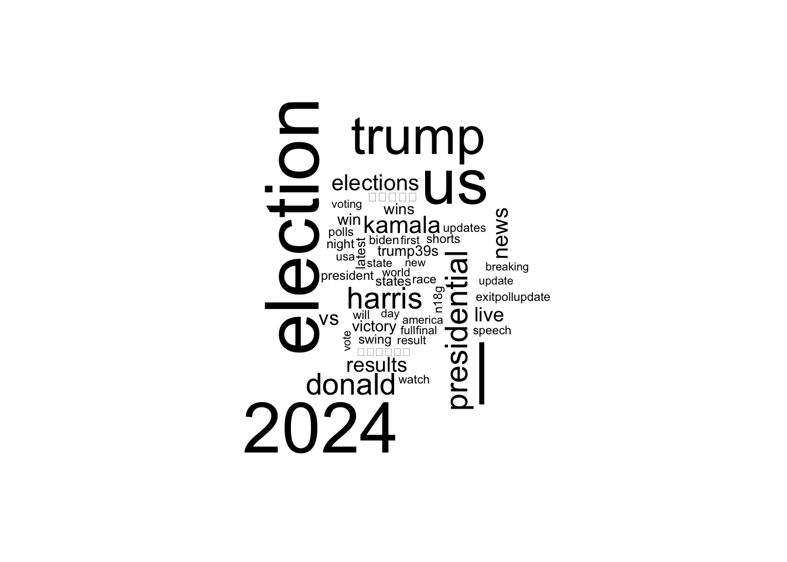
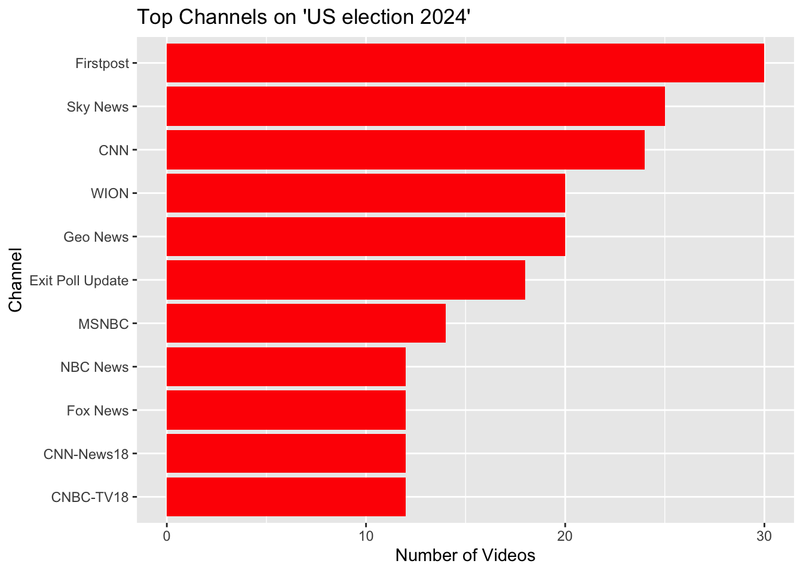

Attaching package: 'gridExtra'
The following object is masked from 'package:dplyr':
combine
library(httr)library(tm)
Loading required package: NLP
Attaching package: 'NLP'
The following object is masked from 'package:httr':
content
The following object is masked from 'package:ggplot2':
annotate
# This one works today #yt_oauth("449459649595-3nqbg06e1ij0i2184ulc19q33lc08tvo.apps.googleusercontent.com", "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", token ="")### Step 3: Download YouTube Data#### Here’s an example of collecting data on the “US election 2024.”#### Search for videos related to "US election 2024"yt_uselection2024 <-yt_search(term ="US election 2024")#### Display the first few rowsvideo_data <-head(yt_uselection2024)subset_video_data <- video_data %>%select(video_id, channelId, title)print(subset_video_data)
video_id channelId
1 A3AXszRgX7I UCO0akufu9MOzyz3nvGIXAAw
2 X4FtUJdKFCE UCeY0bbntWzzVIaj2z3QigXg
3 BJkf7e_cZ68 UCH1oRy1dINbMVp3UFWrKP0w
4 uT9s4BXcv6w UCXIJgqnII2ZOINSWNOGFThA
5 ORJI0-VSykQ UCeY0bbntWzzVIaj2z3QigXg
6 9olb6OvXjKg UCupvZG-5ko_eiXAupbDfxWw
title
1 Donald Trump wins the 2024 US election
2 WATCH LIVE: Donald Trump wins 2024 presidential election | NBC News NOW
3 What polls say about the 2024 presidential election
4 Donald Trump speaks after winning the 2024 Presidential Election
5 Possible paths to a win in the 2024 presidential election
6 Trump wins 2024 presidential election, CNN projects
2. Word Cloud of Video Titles
The most frequently used words in video titles are extracted and visualized.
# Extract titles and clean uptitles <- yt_uselection2024$titletitles_clean <-tolower(titles) %>%stri_replace_all_regex("[[:punct:]]", "") %>%str_split(" ") %>%unlist()# Create a word frequency tableword_freq <-table(titles_clean)word_freq_df <-as.data.frame(word_freq, stringsAsFactors =FALSE)colnames(word_freq_df) <-c("word", "freq")# Filter common words (stop words) and plot a word cloudword_freq_df <- word_freq_df %>%filter(!word %in% tm::stopwords("en"))set.seed(123)wordcloud(words = word_freq_df$word, freq = word_freq_df$freq, max.words =50)

Figure 2: Word Cloud of Video Titles – Most frequent words in YouTube video titles about the 2024 U.S. election.
3. Analyzing Video Publication Dates
The following code extracts publish dates and plots the frequency of videos published over time.
### 4.2. Plot Video Publish Dates# Format publish dates and aggregate datayt_sm <- yt_uselection2024 %>%mutate(publish_date =as.Date(publishedAt)) %>%count(publish_date)# Plot the frequency of videos published over timeggplot(yt_sm, aes(x = publish_date, y = n)) +geom_line(color ="blue") +labs(title ="Videos Published Over Time", x ="Date", y ="Number of Videos") +theme_bw()
Figure 3: Video Publication Timeline – Distribution of videos published over time.
4. Identifying Top YouTube Channels
The top 10 channels with the highest number of videos related to the election are visualized.
# Summarize by channeltop_channels <- yt_uselection2024 %>%count(channelTitle, sort =TRUE) %>%top_n(10)
Selecting by n
# Plot top channelsggplot(top_channels, aes(x =reorder(channelTitle, n), y = n)) +geom_bar(stat ="identity", fill ="red") +coord_flip() +labs(title ="Top Channels on 'US election 2024'", x ="Channel", y ="Number of Videos")

5. Analyzing CNN’s YouTube Channel
The code extracts CNN’s channel statistics, including:
[1] "Hollywood CNN! Welcome fake news!"
[2] "6:28 damn this dude was completely wrong"
[3] "Omg"
[4] "Abandoned equipments - tanks, APCs, airplanes ,etc - showed that Assad ‘s army is in complete disarray."
[5] "May the innocent people be saved by God."
[6] "The winner of the conflict is not the takfiris but Toyota, the favorite 'warhorse' of the Islamists which runs faster than the Russian tanks of Assad which enabled the Islamists to reach Aleppo in no time at all."
library(quanteda)library(quanteda.textstats)library(quanteda.textplots)library(quanteda.corpora)library(ggplot2)library(dplyr)library(stringi)# Define a function to remove emojis using a regex patternremove_emojis <-function(text) {stri_replace_all_regex( text,"[\U0001F600-\U0001F64F\U0001F300-\U0001F5FF\U0001F680-\U0001F6FF\U0001F700-\U0001F77F\U0001F780-\U0001F7FF\U0001F800-\U0001F8FF\U0001F900-\U0001F9FF\U0001FA00-\U0001FA6F\U0001FA70-\U0001FAFF\U00002700-\U000027BF]","",vectorize_all =FALSE )}# Clean comments by removing mentions, "@@", emojis, and extra whitespacevideocomments_cleaned <- videocomments %>%mutate(textOriginal = textOriginal %>%stri_replace_all_regex("\\S*@\\S*", "") %>%# Remove mentionsstri_replace_all_fixed("@@", "") %>%# Remove "@@"remove_emojis() %>%# Remove emojisstr_squish() # Remove extra whitespace )# Create a corpus from cleaned commentscorp_comments <-corpus(videocomments_cleaned$textOriginal)# Tokenize the commentstoks_comments <-tokens(corp_comments, remove_punct =TRUE)dfmat_comments <-dfm(toks_comments)# Define custom stopwordscustom_stopwords <-c("the", "and", "to", "is", "are", "a", "in", "of", "you", "this", "they", "that", "it", "from", "by", "i", "with", "for", "these", "as", "on", "be", "all", "their", "so", "have" , "al", "was", "at", "your", "it's", "do", "assad", "but", "will", "what", "if", "one", "how", "or", "about", "know")dfmat_comments <-dfm_remove(dfmat_comments, pattern = custom_stopwords)dfm_nonzero <- dfmat_comments[ntoken(dfmat_comments) >0, ]tstat_freq <-textstat_frequency(dfm_nonzero, n =27)# View the top 20 frequenciesprint(head(tstat_freq, 27))
Can you use quanteda to analyze the text data from YouTube comments?
library(quanteda)library(quanteda.textstats)library(quanteda.textplots)library(quanteda.corpora)library(ggplot2)library(dplyr)library(stringi)# Define a function to remove emojis using a regex patternremove_emojis <-function(text) {stri_replace_all_regex( text,"[\U0001F600-\U0001F64F\U0001F300-\U0001F5FF\U0001F680-\U0001F6FF\U0001F700-\U0001F77F\U0001F780-\U0001F7FF\U0001F800-\U0001F8FF\U0001F900-\U0001F9FF\U0001FA00-\U0001FA6F\U0001FA70-\U0001FAFF\U00002700-\U000027BF]","",vectorize_all =FALSE )}# Clean comments by removing mentions, "@@", emojis, and extra whitespacevideocomments_cleaned <- videocomments %>%mutate(textOriginal = textOriginal %>%stri_replace_all_regex("\\S*@\\S*", "") %>%# Remove mentionsstri_replace_all_fixed("@@", "") %>%# Remove "@@"remove_emojis() %>%# Remove emojisstr_squish() # Remove extra whitespace )# Create a corpus from cleaned commentscorp_comments <-corpus(videocomments_cleaned$textOriginal)# Tokenize the commentstoks_comments <-tokens(corp_comments, remove_punct =TRUE)dfmat_comments <-dfm(toks_comments)# Define custom stopwordscustom_stopwords <-c("the", "and", "to", "is", "are", "a", "in", "of", "you", "this", "they", ">", "that", "it", "from", "by", "i", "with", "for", "these", "as", "on", "be", "all", "their", "so", "have" , "al", "was", "at", "your", "it's", "do", "assad", "but", "will", "what", "if", "one", "how", "or", "about", "know")dfmat_comments <-dfm_remove(dfmat_comments, pattern = custom_stopwords)dfm_nonzero <- dfmat_comments[ntoken(dfmat_comments) >0, ]tstat_freq <-textstat_frequency(dfm_nonzero, n =27)# View the top 20 frequenciesprint(head(tstat_freq, 27))
feature frequency rank docfreq group
1 rebels 76 1 70 all
2 not 75 2 66 all
3 syria 66 3 54 all
4 us 54 4 45 all
5 people 53 5 32 all
6 no 41 6 31 all
7 cnn 40 7 31 all
8 war 40 7 36 all
9 russia 40 7 34 all
10 like 36 10 29 all
11 terrorists 35 11 30 all
12 has 34 12 19 all
13 now 33 13 31 all
14 we 33 13 27 all
15 there 32 15 27 all
16 when 32 15 27 all
17 who 31 17 29 all
18 why 28 18 26 all
19 because 27 19 22 all
20 isis 27 19 25 all
21 them 25 21 22 all
22 putin 25 21 19 all
23 he 25 21 17 all
24 just 25 21 23 all
25 spirit 25 21 2 all
26 world 25 21 21 all
27 syrian 24 27 18 all
# Visualize the Most Frequent Wordststat_freq %>%ggplot(aes(x =reorder(feature, frequency), y = frequency)) +geom_point() +coord_flip() +labs(x =NULL, y ="Frequency", title ="Top 15 Words in YouTube Comments") +theme_minimal()
Figure 6: Most Frequent Words in YouTube Comments – A ranking of the 15 most common words used in YouTube comments on election-related videos.
7. Generating a Word Cloud of YouTube Comments
# Create a Word Cloudset.seed(132)textplot_wordcloud(dfm_nonzero, max_words =100)
Figure 7: YouTube Comment Word Cloud – Visual representation of frequently used words in YouTube comments.
Discussion:
Assignment Reflection:
This assignment required extensive effort to successfully retrieve and analyze YouTube comments from a CNN video. To achieve this, I leveraged the tuber package for data collection and quanteda for text analysis, with additional coding assistance from ChatGPT and reference to online documentation.
The comment processing involved tokenizing words, removing emojis, filtering out usernames, and eliminating common stopwords to ensure meaningful analysis. By visualizing the most frequently used words, I was able to identify dominant themes in the discussion.
The analysis revealed a predominantly negative sentiment, with frequent mentions of terms related to terrorism, conflict in the Middle East, and Syria. This suggests that the video’s content likely revolves around geopolitical tensions, aligning with CNN’s coverage focus. The findings highlight how YouTube comments can reflect public sentiment and engagement with political topics, making social media a powerful tool for understanding audience reactions to news coverage.